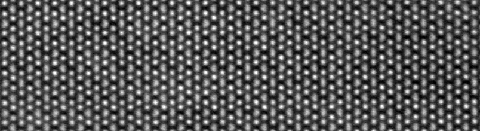
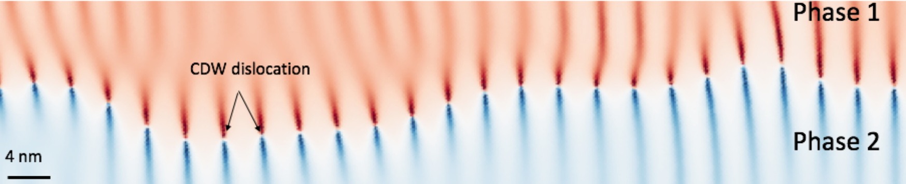

Overview

Atomic-resolution cryogenic electron microscopy of low temperature trimers in a 2D material
Quantum materials host a myriad of fascinating structural, electronic and magnetic ground states as well as complex behaviors ranging from the nanoscale coexistence of competing phases to a huge sensitivity to external stimuli. Our laboratory utilizes in situ electron microscopy to visualize and manipulate these materials at the atomic scale.
Techniques
The instrument at the heart of our research is the scanning transmission electron microscope (STEM) which provides vivid atomic-resolution images of crystalline materials. To access and manipulate the rich phases of quantum materials, both ultra-stable cryogenic sample holders and in situ control knobs are essential.
High-resolution cryogenic STEM imaging near 90 K has recently been demonstrated, enabling unprecedented microscopic insights such as the direct visualization of the picometer scale distortions that accompany charge and orbital order. More exotic low temperature phenomena remain to be explored.
In our lab, we strive to couple cryogenic STEM imaging (down to liquid helium temperatures) with in situ and ex situ electrical excitation. This combination will allow us to not only correlate atomic-scale insights with the macroscopic electronic properties of quantum materials but also to induce novel phenomena in these materials.
Picometer-scale atomic displacements in the charge order phase of manganites
Topics
The materials we study range from bulk complex oxides to atomically engineered heterointerfaces to quasi-2D and quasi-1D compounds. These systems constitute rich playground for studying phenomena such as charge and orbital order, superconductivity, phase separation, ferroelectricity and quantum criticality.
We are also interested in understanding phase transitions by directly visualizing order and disorder. For example, through real space observations of topological defects in charge-ordered stripes, we revealed how phase fluctuations alter long range ordering.
Building on this, our lab is developing a platform to image non-equilibrium transitions and metastable states driven by electrical current and/or light pulses.

Metastable charge density wave domains in a 2D material